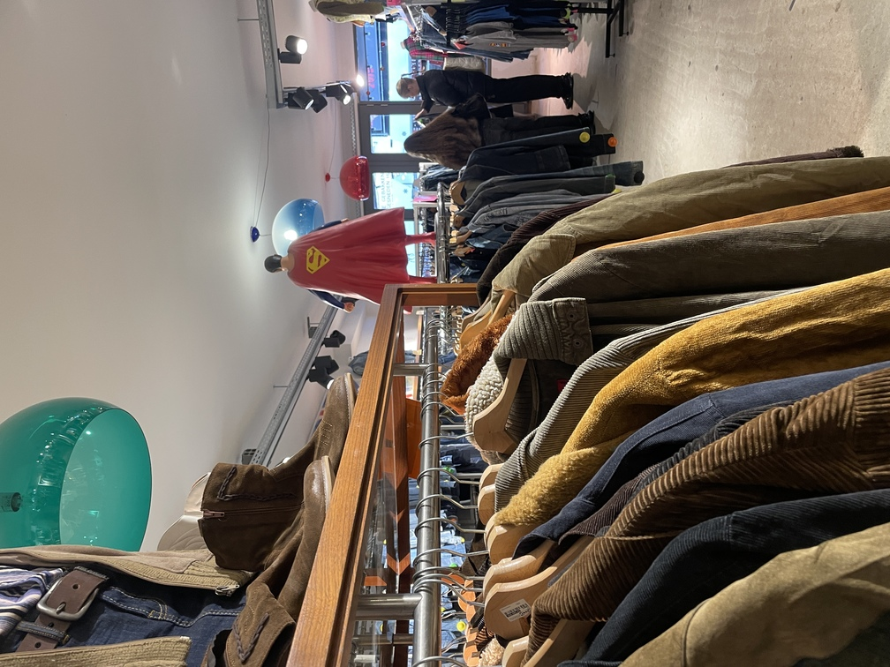
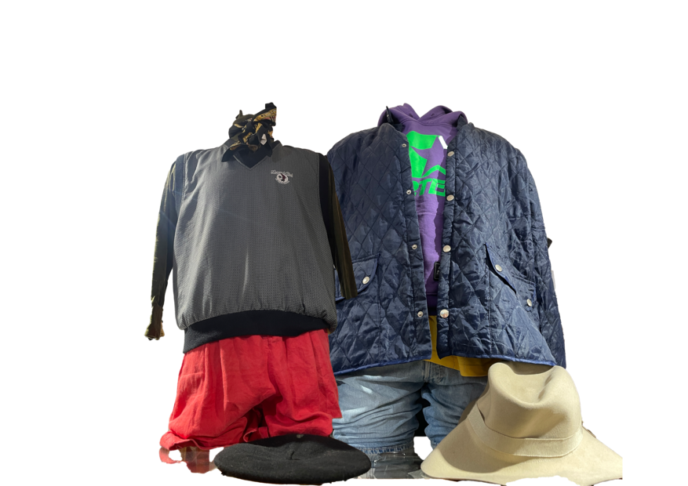

About Weight & Wear
The Kilo Store is the place for fashion lovers who enjoy unique finds! Instead of paying per item, here you buy clothing based on weight. You stroll around, pick your favorite pieces from vintage jackets to cool T-shirts, and weigh them at the end of your shopping adventure. The heavier they are, the more you pay!
It's not only a smart way to fill up your wardrobe without the usual price tags, but it's also super sustainable. You give clothes a second life and contribute to reducing waste.
How it works


